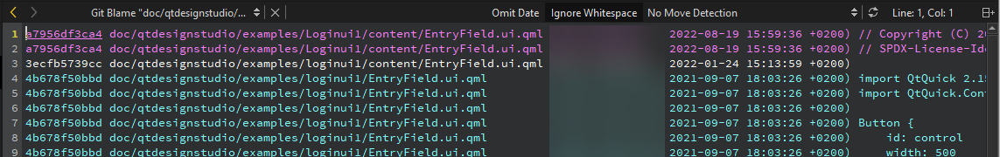

git blame
By default, each line is annotated in the editor when you move the cursor through a file. Hover over the annotation to view commit details and to apply actions to the commit.

Instant blame in the code editor
When instant blame is off, you can go to Tools > Git > Current File > Instant Blame to view blame for the current line.
Hide blame in the editor
To hide blame in the editor, go to Preferences > Version Control > Git and clear Instant Blame.

View blame for the whole file
To view blame for all lines in the file in the Git Blame view, go to Tools > Git > Current File and select Blame for <file>. Before each line, you can see the identifier of the commit it originates from.

To hide the date and time information in the view, select Omit Date.
To find the commit that introduced the last real code change, select Ignore Whitespace.
To find the commit that introduced a line before it was moved, select No Move Detection. To view moved or copied lines within a file or between files, select Detect Moves Within File, Detect Moves Between Files, or Detect Moves and Copies Between Files.
To rescan the files, select  (Reload).
(Reload).
Select the commit identifier to show a detailed description of the change in the Git Show view.
Right-click the commit identifier to apply other actions to the commit, such as cherry-pick, checkout, or revert it.
View blame in previous versions
To show the annotation of a previous version, right-click the commit identifier and select Blame Parent Revision. This allows you to navigate through the history of the file and obtain previous versions of it.
See also How To: Use Git and Git.